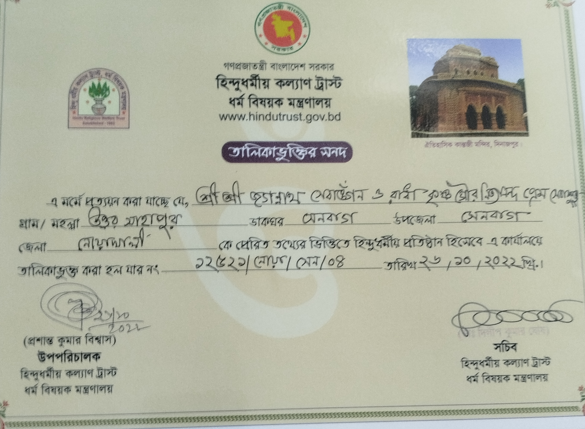

শ্রী শ্রী জগন্নাথ সেবাঙ্গন
সেবা ও প্রণামী রসিদ আবেদন পোর্টাল
🙏 প্রসাদ ও বাটা বরাদ্দের আবেদন ফরম
কোনো উপলক্ষ, শুভ উৎসব কিংবা প্রসাদ বা ক্যাটারিং বাটা প্রসংগে তথ্য দিয়ে মন্দির বরাবর আবেদন করুন।
 🌟 International Sanatan Spiritual & Humanitarian Hub
🌟 International Sanatan Spiritual & Humanitarian Hub
স্থাপিত: ১৩৮০ বঙ্গাব্দ | উত্তর সাহাপুর, সেনবাগ, নোয়াখালী, বাংলাদেশ
শ্রীধাম বৃন্দাবনস্থিত পবিত্র কেশীঘাট শ্রী শ্রী রাধা মুরারী মোহন কুঞ্জ-এর শাখা মন্দির এবং আন্তর্জাতিক শ্রী শ্রী রাধা মুরারী মোহন সেবা সংঘ কর্তৃক বিশ্বব্যাপী সনাতন ধর্ম প্রচার, ভক্তি সাধনা ও আর্তমানবতার সেবায় পরিচালিত একটি পবিত্র তীর্থপীঠ।
"স্বপ্নের শ্রীবৃন্দাবন নির্মাণে আন্তর্জাতিক সহযোগিতা ও সনাতন সংস্কৃতির বিশ্বজনীন প্রচারই আমাদের অঙ্গীকার।"
উত্তর সাহাপুর, সেনবাগ, নোয়াখালী, বাংলাদেশ
গো-মাতা সেবা এবং গো-পালনের মাধ্যমে বৈষ্ণবীয় সংস্কৃতির প্রসার ও পরিচর্যা করা।
মানবসেবাই মাধবসেবা—এই বৈষ্ণবীয় আদর্শকে সামনে রেখে আমাদের সংঘের মাধ্যমে সমাজের কল্যাণে এবং দুস্থ মানুষের মুখে হাসি ফোটাতে নানামুখী দীঘমেয়াদী প্রকল্প বাস্তবায়নের উদ্যোগ গ্রহণ করা হয়েছে।
সর্বভূতে দয়া ও অহিংস নীতি জীবন ও সমাজে গ্রহণ ও বাস্তবায়ন করা।
অনাথ আশ্রম ও বৃদ্ধাশ্রম নির্মাণ এবং এর সার্বিক কার্যক্রম বাস্তবায়ন করা।
গরীব ও মেধাবী শিক্ষার্থীদের নিয়মিত বৃত্তি প্রদান এবং শিক্ষার প্রসার ঘটানো।
দরিদ্র ও অসহায় রোগীদের জন্য জরুরি চিকিৎসা সেবা ও ওষুধের ব্যবস্থা করা।
দরিদ্র ও অসহায় মানুষদের মধ্যে নিয়মিত অন্নদান ও বস্ত্রদান সেবা প্রদান করা।
সনাতনী ও বৈষ্ণবীয় আদর্শের প্রচার, প্রসার এবং নৈতিক শিক্ষা প্রদান করা।
বেকার জনগোষ্ঠীর জন্য কর্মসংস্থান সৃষ্টি এবং শিক্ষিত বেকারদের জন্য নানামুখী পেশাগত প্রশিক্ষণের ব্যবস্থা করা।
🙏 "সকল জীবের কল্যাণে ভক্তিমার্গের পথে এগিয়ে চলাই আমাদের ব্রত।" 🙏
শ্রী শ্রী জগন্নাথ সেবাঙ্গনের সার্বিক উন্নয়ন, সেবা কার্যক্রম পরিচালনা ও আন্তর্জাতিক পরিমণ্ডলে একে এগিয়ে নিয়ে যাওয়ার জন্য গঠিত নবনির্বাচিত সুযোগ্য কার্যনির্বাহী পর্ষদ:
মোবাইল ও হোয়াটসঅ্যাপ: +880 1717-300520
"মন্দিরের সেবায় ও ভক্তবৃন্দের কল্যাণে সার্বিক দিকনির্দেশনায় নিয়োজিত।"
মোবাইল ও হোয়াটসঅ্যাপ: +880 1836-188118
"সেবা কার্যক্রম বাস্তবায়ন ও প্রশাসনিক ব্যবস্থাপনায় নিবেদিতপ্রাণ।"
মোবাইল ও হোয়াটসঅ্যাপ: +8801711369035
শ্রী শ্রী জগন্নাথ সেবাঙ্গনের আধ্যাত্মিক সাধনা, নীতি-নির্ধারণী সিদ্ধান্ত এবং আন্তর্জাতিক সম্প্রসারণে যাঁদের সুচিন্তিত পরামর্শ ও পৃষ্ঠপোষকতা আমাদের পথপ্রদর্শক:
আমাদের এই পবিত্র তীর্থপীঠ ও সেবাঙ্গন পরিচালনার ক্ষেত্রে দেশের প্রচলিত আইন ও ট্রাস্টের বিধিমালা অনুসরণ করা হয়। বাংলাদেশ সরকারের **হিন্দু ধর্মীয় কল্যাণ ট্রাস্ট** ও সংশ্লিষ্ট দপ্তরের নীতিমালা অনুযায়ী আমাদের কার্যক্রম পরিচালিত ও নিবন্ধিত রয়েছে।
সনদপত্র ও মনograms-এর অফিশিয়াল কপি এখানে সংযুক্ত রয়েছে।
অফিশিয়াল ডকুমেন্ট যাচাইকৃত
আপনার স্বপ্নের শ্রীবৃন্দাবন ও মানবসেবা প্রকল্পগুলোকে বিশ্বদরবারে প্রতিষ্ঠিত করতে এবং আন্তর্জাতিক দাতা সংস্থা বা প্রবাসীদের কাছ থেকে স্বচ্ছতার সাথে অনুদান গ্রহণ করার জন্য কৌশলগত স্তম্ভসমূহ:
বিদেশি অনুদান বা দাতা সংস্থার ফান্ড গ্রহণের জন্য এনজিও বিষয়ক ব্যুরো (NGO Affairs Bureau)-এর প্রজেক্ট ভিত্তিক অনুমোদন বা FD-7 ফরমের মাধ্যমে আইনগত অনুমোদন নিশ্চিতকরণ।
গৌশালা, অন্নক্ষেত্র, বৃদ্ধাশ্রম বা বেদ পাঠশালা চালুর সুনির্দিষ্ট প্রজেক্ট প্রপোজাল এবং আন্তর্জাতিক মানদণ্ডের বার্ষিক আর্থিক অডিট রিপোর্ট যা দাতাদের আস্থা শতভাগ বৃদ্ধি করে।
ইউটিউব ও ফেসবুক লাইভ আরতি, পেমেন্ট গেটওয়ে এবং রিয়েল-টাইম ইমপ্যাক্ট রিপোর্টিংয়ের মাধ্যমে বৈশ্বিক ভক্তদের সাথে নিবিড় সংযোগ।
"শ্রী শ্রী জগন্নাথ সেবাঙ্গন ও রাধাকৃষ্ণ গৌর নিত্যানন্দ প্রেম সেবাকুঞ্জ—শ্রীধাম বৃন্দাবনের কেশীঘাট কুঞ্জের সরাসরি আদর্শে পরিচালিত একটি পরম পবিত্র তীর্থস্থান। এই সেবাঙ্গনের মাধ্যমে সনাতন ধর্ম প্রচার এবং মানবসেবার যে মহৎ উদ্যোগ নেওয়া হয়েছে, তা বিশ্বমানবের কল্যাণে অত্যন্ত প্রশংসনীয় ও অনুকরণীয়।"
— আন্তর্জাতিক শ্রী শ্রী রাধা মুরারী মোহন সেবা সংঘ ও বৃন্দাবন মঠ নেতৃবৃন্দের যৌথ প্রশংসাপত্র
ব্রহ্মমুহূর্তে শ্রীবিগ্রহগণের দিব্য দর্শন, ভক্তিপূর্ণ শৃঙ্গার আরতি ও মহামন্ত্র কীর্তন।
প্রভুর দিব্য শৃঙ্গার দর্শন ও ভক্তবৃন্দের সমাগমে আরতি অনুষ্ঠান।
মধ্যাহ্নে মহাপ্রভুর শ্রীচরণে সুস্বাদু রাজভোগ নিবেদন ও ভোগারতি কীর্তন।
বিকেলবেলায় বিশেষ পূজা, ভোগ নিবেদন ও আরতি অনুষ্ঠান।
গোধূলিলগ্নে ভক্তিপূর্ণ সন্ধ্যা আরতি ও বিশ্বশান্তি কামনায় নামসংকীর্তন।
রাত্রিতে শ্রীবিগ্রহের সন্তুষ্টিার্থে শীতল ভোগ নিবেদন ও শয়ন সেবা।
জ্যৈষ্ঠ পূর্ণিমা তিথিতে পরম প্রভুর দিব্য অভিষেক ও স্নান উৎসব মহোৎসব।
মহাপ্রভুর রথারোহণ, বর্ণাঢ্য শোভাযাত্রা ও মাসির বাড়ি যাত্রার পবিত্র উৎসব।
শ্রাবণ পূর্ণিমা উপলক্ষে শ্রীশ্রী রাধাকৃষ্ণের আনন্দময় দোলনা ও ঝুলন উৎসব।
ভগবান শ্রীকৃষ্ণের শুভ জন্মোৎসব, মধ্যরাত্রিতে মহাপূজা ও মহাপ্রসাদ বিতরণ।
শ্রীচৈতন্য মহাপ্রভুর আবির্ভাব তিথি ও আনন্দময় ফাগুন উৎসব।
গোবর্ধন পূজা, পরিক্রমা ও বর্ণাঢ্য অন্নকূট ভোগ নিবেদন মহোৎসব।
তিন দিন ব্যাপী প্রতিষ্ঠা বার্ষিকী ও ৬৪ মহান্তের ভোগ আরাধনা মহোৎসব।
নামাচার্য শ্রী হরিদাস ঠাকুরের নির্যাণ তিথি ও পানীহাটি চিড়াদধি মহোৎসব উদযাপন।
আমাদের মন্দিরের সুশৃঙ্খল পরিচালনা, সেবা কার্যক্রমের স্বচ্ছতা এবং আধ্যাত্মিক পরিবেশ বজায় রাখার জন্য নির্দিষ্ট নিয়মনীতি সংবলিত অফিসিয়াল গঠনতন্ত্র ও সংবিধান রয়েছে:
অন্য কোথাও খোঁজাখুঁজি না করে মন্দিরের সমস্ত অফিশিয়াল ওয়েবসাইট, ফর্ম, সোশ্যাল মিডিয়া ও ডকুমেন্টের সরাসরি লিংক নিচে দেওয়া হলো:
উত্তর সাহাপুর, সেনবাগ, নোয়াখালী, বাংলাদেশ।
📍 পথ পরিচিতি:
সেনবাগ উপজেলা বাজার থেকে ২ কিলোমিটার দক্ষিণে এবং সেনবাগ রাস্তার মাথা থেকে ১.৫ কিলোমিটার উত্তরে স্টিল ব্রিজের পূর্ব পাশে সাহা বাড়ি সংলগ্ন।
🏛️ পূর্ণ ঠিকানা:
শ্রী শ্রী জগন্নাথ সেবাঙ্গন ও রাধাকৃষ্ণ গৌর নিত্যানন্দ প্রেম সেবাকুঞ্জ, উত্তর সাহাপুর, সেনবাগ, নোয়াখালী, বাংলাদেশ।

আমাদের মন্দির ও মানবসেবামূলক কার্যক্রমে আপনার সাধ্যমতো আর্থিক সহায়তা পাঠাতে নিচের কিউআর কোডটি স্ক্যান করুন অথবা সরাসরি লিংকে ক্লিক করুন:
⚠️ শুধুমাত্র উপরোক্ত অ্যাকাউন্টগুলোতে অনুদান পাঠিয়ে সঠিক ট্রানজেকশন আইডি (TrxID) ও তথ্য প্রদান করলেই কেবল স্বয়ংক্রিয় মানি রিসিট ও গুগল শিটে ডেটা জমা হবে।
"রকেটের মাধ্যমে অনুদান পাঠাতে স্ক্যান করুন"
সরাসরি ব্রাউজারে ডোনেশন ফর্ম ওপেন করতে ক্লিক করুন:
🙏 Donate via Jotform (অনলাইন ডোনেশন ফর্ম)ব্যাংক নাম: অগ্রণী ব্যাংক পিএলসি (Agrani Bank PLC.)
ব্রাঞ্চ: সেনবাগ বিআর ৭১৭৯ (Senbag BR 7179)
অ্যাকাউন্ট নাম: শ্রী শ্রী জগন্নাথ সেবাঙ্গন
অ্যাকাউন্ট নম্বর: 0200016213678
কাস্টমার আইডি (Customer ID): 3177228
রাউটিং নম্বর / অন্যান্য তথ্য: 010751631
* প্রবাসী ভক্তরা বিদেশ থেকে ওয়্যার ট্রান্সফার (Wire Transfer) অথবা ব্যাংকের মাধ্যমে সরাসরি এই অ্যাকাউন্টে অনুদান পাঠাতে পারবেন।
সরাসরি ব্যাংকে বা Wise, Remitly, Western Union অ্যাপের মাধ্যমেও টাকা পাঠানো যায়।
আমাদের মন্দির ও মানবসেবামূলক কার্যক্রমে যারা নিয়মিত ও বিশেষ অনুদান দিয়ে সহযোগিতা করছেন, তাদের প্রতি শ্রী শ্রী জগন্নাথ দেবের চরণে অশেষ কৃপা প্রার্থনা ও আন্তরিক ধন্যবাদ জানাই।
আসন্ন বিশেষ ধর্মীয় উৎসব ও তিথিতে মন্দিরের বিশেষ পূজা-অর্চনা, অন্নপ্রাসাদ ও ভক্তসেবায় আপনার সাধ্যমতো অংশ নিন।
উৎসবের দিনগুলোতে সরাসরি বিকাশ/নগদ অথবা ব্যাংকের মাধ্যমে আপনাদের অনুদান পাঠিয়ে সেবায়েতকে অবহিত করার অনুরোধ করা হলো।
বিকাশ অথবা নগদের মাধ্যমে সরাসরি অনুদান পাঠাতে নিচের পার্সোনাল নম্বরটি ব্যবহার করুন:
বিকাশ ও নগদ (পার্সোনাল):
+8801711369038
* সেন্ড মানি (Send Money) করার পর লেনদেন আইডি (TrxID) সংরক্ষণ করে আমাদের সাথে যোগাযোগ করুন।
আমাদের মন্দির ও মানবসেবামূলক কার্যক্রমে যারা নিয়মিত ও বিশেষ অনুদান দিয়ে সহযোগিতা করছেন, তাদের প্রতি শ্রী শ্রী জগন্নাথ দেবের চরণে অশেষ কৃপা প্রার্থনা ও আন্তরিক ধন্যবাদ জানাই।
আসন্ন বিশেষ ধর্মীয় উৎসব ও তিথিতে মন্দিরের বিশেষ পূজা-অর্চনা, অন্নপ্রাসাদ ও ভক্তসেবায় আপনার সাধ্যমতো অংশ নিন।
উৎসবের দিনগুলোতে সরাসরি বিকাশ/নগদ অথবা ব্যাংকের মাধ্যমে আপনাদের অনুদান পাঠিয়ে সেবায়েতকে অবহিত করার অনুরোধ করা হলো।
অনুদান পাঠাতে বা যেকোনো সহায়তার প্রয়োজনে প্রবাসী ও ভক্তরা সরাসরি হোয়াটসঅ্যাপ বা ইমোতে যোগাযোগ করতে পারেন:
হোয়াটসঅ্যাপ ও ইমো নম্বর:
+8801711369035
শ্রী শ্রী জগন্নাথ সেবাঙ্গন ও রাধাকৃষ্ণ গৌর নিত্যানন্দ প্রেম সেবাকুঞ্জ
লোকেশন / ঠিকানা: উত্তর সাহাপুর, সেনবাগ, নোয়াখালী, বাংলাদেশ।
মোবাইল ও হোয়াটসঅ্যাপ: +8801711369035
(শ্রীধাম বৃন্দাবনস্থিত কেশীঘাট শ্রী শ্রী রাধা মুরারী মোহন কুঞ্জের শাখা মন্দির এবং আন্তর্জাতিক শ্রী শ্রী রাধা মুরারী মোহন সেবা সংঘ কর্তৃক পরিচালিত)
সেবা ও প্রণামী রসিদ আবেদন পোর্টাল
কোনো উপলক্ষ, শুভ উৎসব কিংবা প্রসাদ বা ক্যাটারিং বাটা প্রসংগে তথ্য দিয়ে মন্দির বরাবর আবেদন করুন।
উৎসব ও একাদশী সেবা বুকিং ফরম | Festival & Seva Booking Form